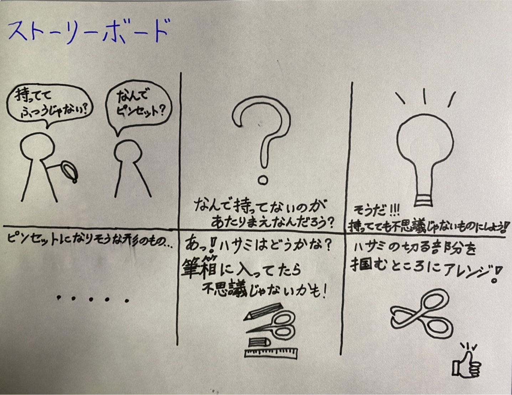
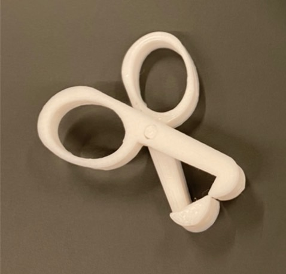
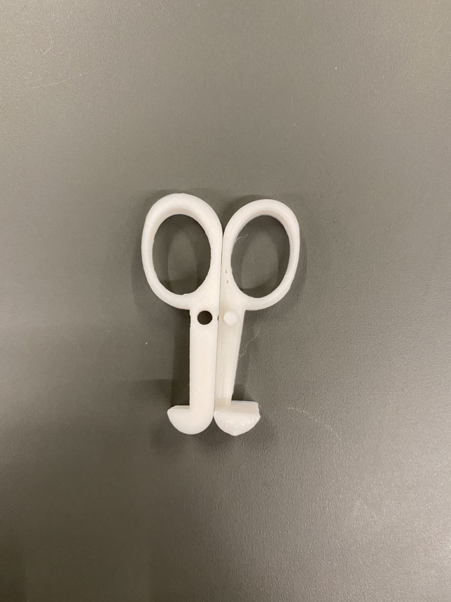

1.作品のタイトル
キレのあるピンセット
2.構造段階の手書きスケッチ、ストーリーボードなどの写真

3.実際に作った作品の画像


4.設計ファイル（stlファイルをfilesフォルダに入れて、そこにリンクを貼ってください）
stlファイル
stlファイル
5.作品の説明
はさみの形をしたピンセット。筆箱に紛れ込んでいても違和感のないもので、持ち運びしやすいもの。
取り外しも可能で、洗いやすい！
6.なぜこの作品を作ろうという想いに至ったか
ピンセットを普段持ち歩いていたら、不自然に思われる可能性があるから。普段持ち歩く筆箱に違和感なく入っていたら面白いと思ったから。
また、小さいものだけでなく、通常のピンセットより、部品の組み合わせにより、可動域を広くすることで、多少大きくて、重量があるものでも、つかめるようにしたいと考えたため。
（作ってみて分かったのは、使えないピンセット・使えないはさみが世の中にあっても、小さければ、ミニチュア雑貨のようにインテリアの一部にもできるのではないかとも考えられた。）